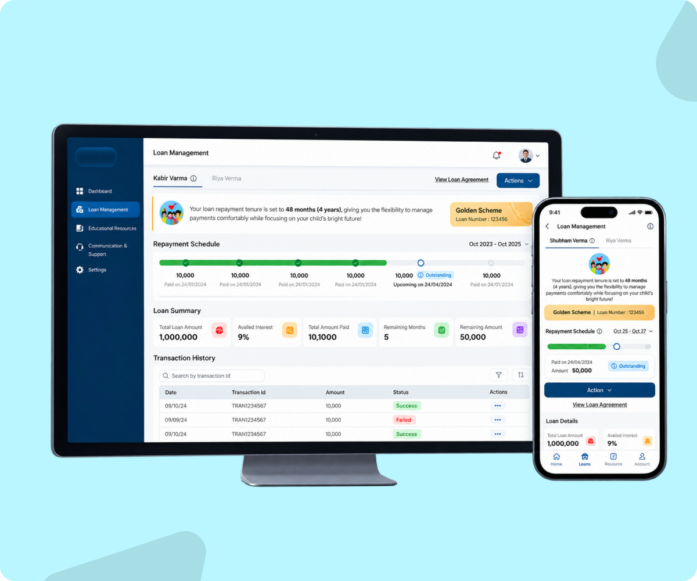

One platform.
Four very different jobs.
I led product design for an education-financing platform that serves parents, schools, investors and operations from one shared data layer, with a role-specific experience for each.

Ground the story in what was actually designed.
The strongest evidence available for this project is the research depth, role coverage and product scope — so the case study uses those instead of invented post-launch outcomes.
One platform, four very different jobs.
I led product design for an education-financing platform that serves parents, schools, investors and operations from one shared data layer, with a role-specific experience for each.
Snapshot
Business context
The platform funds school fees: investors supply capital, schools enroll students into financing schemes (e.g. Month Over Month, Golden), parents repay in instalments, and operations keep the system safe. The platform only works if all four sides trust it.
The business case: smoother onboarding means more families financed; clearer repayment means fewer missed payments; faster school operations mean schools keep offering the scheme; transparent reporting keeps capital flowing.
The problem
The problem wasn't the loan — it was uncertainty. Across seven steps, each person asked different questions:
- ParentsHow much do I pay? What happens next? Am I approved? When does money move?
- SchoolsWhich students are financed? What's been paid? What needs attention?
- InvestorsWhere is my capital? What are the returns?
- OperationsIs everything working as it should?
Early dashboards mirrored the database, so every user had to dig through fields to find their answer.
Measure the experience, not just the interface.
North-star metric: on-time repayment rate — a useful outcome measure connecting parent confidence, school trust and investor returns.
Complexity couldn't be removed. It had to be put in the right place.
Findings
- Parents needed reassurance. Anxiety peaked around approval, disbursement and the next payment date.
- Schools needed speed. Admins act on many students at once; they need status and exceptions, not detail.
- Complexity wasn't going away. Loan structures, schedules and risk rules are real; the product must carry them, not the user.
Design around decisions, not database fields.
We rebuilt the parent dashboard as answers to the questions parents actually ask.
The same rule set every role's information hierarchy: the first thing on screen answers that role's first question.
Three decisions guided every screen.
01 — Hide complexity, not information.
The product manages loan structures, schedules and disbursement workflows; the detail stays one tap away.
02 — Start with the user's question.
Every screen begins from “what does this person need to know or do?”, not “what data do we have?”.
03 — Don't force everyone into one dashboard.
Shared data, role-specific hierarchy.
Product trade-offs I made
Shared data. Different first questions.
Key features by role
Parent
Repayment timeline with paid/upcoming states, loan summary, transaction history, View Loan Agreement, one-tap actions; web + mobile.
School
Loan disbursement status (Paid / Processing / Failed), student and fee management, raise request, filters by class and section.
Investor
Investment/repayment schedule by year, fund allocation by scheme, transaction history, downloadable reports.
Operations
Monitor users, transactions and exceptions.
The parent experience runs on web and mobile with the same hierarchy, so a parent never relearns the product between devices.
Failure states carry the most anxiety and the most cost.
In financing, failure states are first-class flows.
Happy path: Uploading → Processing → Verification → Approved.
What I led as a Lead Product Designer.
Experience direction
Defined the overall structure and key journeys across four roles.
Product strategy
Set the “decisions, not database fields” principle and the role-based hierarchy.
Design system
Established shared patterns and components so four experiences felt like one product.
Team
Directed and reviewed the work of two designers to keep quality and consistency.
Stakeholders
Aligned business, risk and operations needs across 12 sessions.
Impact through research, scope and product clarity.
The project did not provide verified post-launch analytics, so the impact section focuses on evidence we can stand behind and the measures established for future validation.
What worked. What I'd do next.
What worked: designing each role around its first question turned one complex system into four simple experiences.
What I'd do next
- Test the languageAre repayment, APR and fees understood at first read?
- Test failure recoveryCan parents recover confidently when a document, payment or verification fails?
- Test accessibility under stressCan people act clearly when the financial stakes are high?
- Instrument the funnelTrack drop-off at each of the seven steps to find where to invest next.
What I would measure after launch.
These are the outcome measures I would instrument rather than presenting unverified results as facts.
- Application completion rate and drop-off by step
- Median time from application to approval
- First-time document verification pass rate
- On-time repayment and delinquency rate
- Parent support queries per active loan
- Schools onboarded and students enrolled
- Time to resolve payment exceptions
- Self-serve vs manual investor reporting requests
- Task success and time on task in usability testing